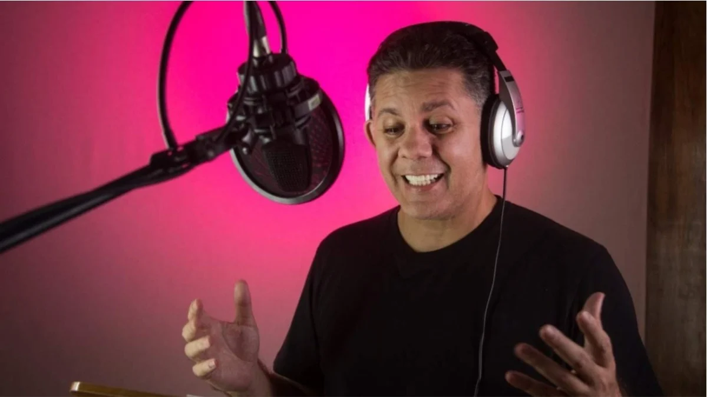
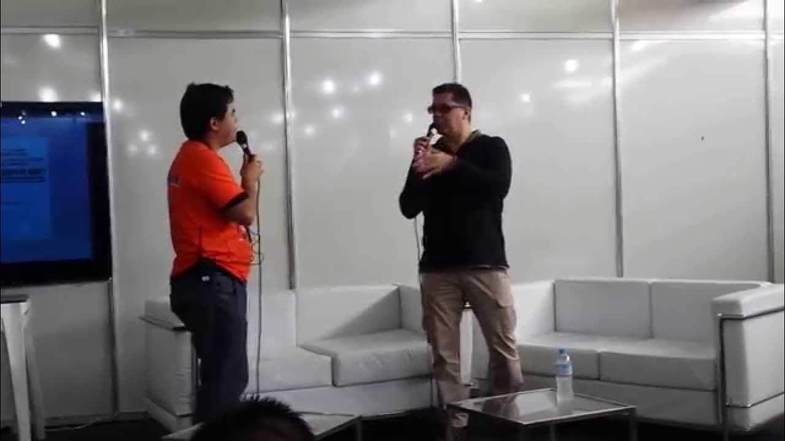
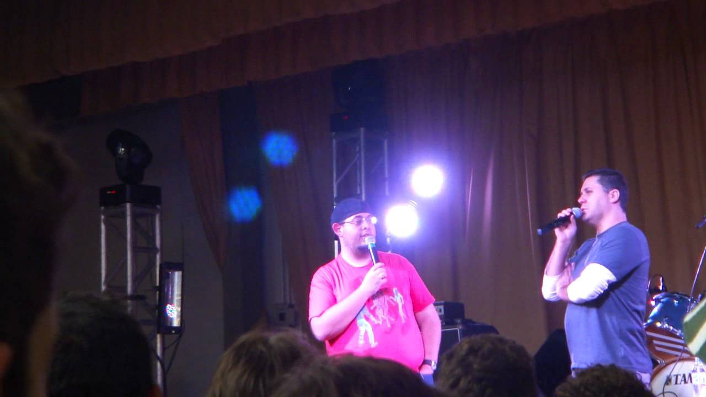
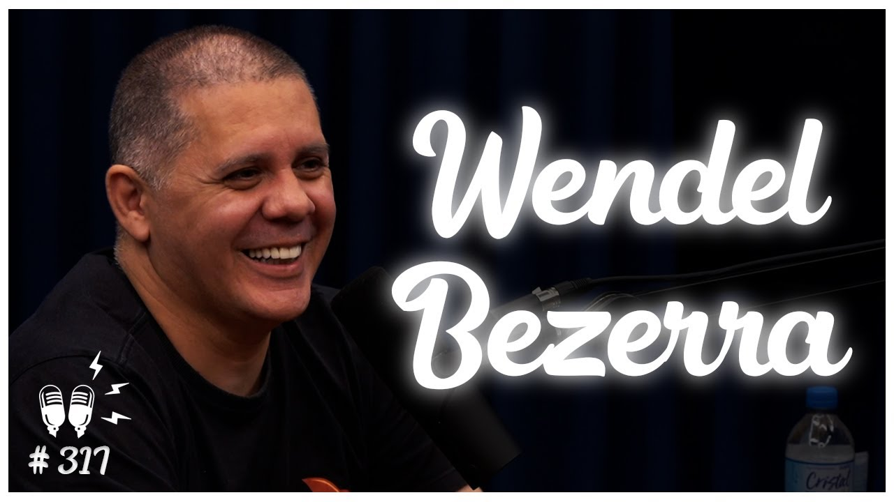
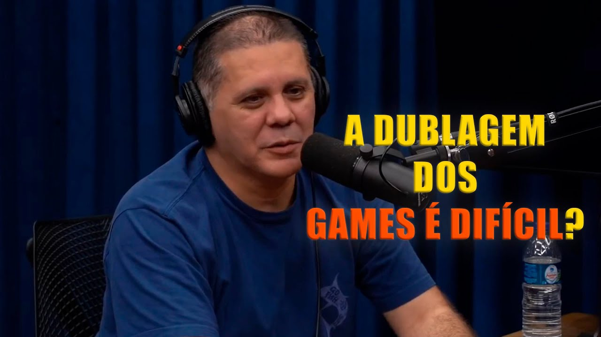

Nascido em São Paulo em 18 de junho de 1974, crecido apenas com sua mãe após a ausência do pai motorista de caminhão, ele passou por dificuldades financeiras na infância
Apesar disso, sua mãe enfatizava a importância do estudo e do teatro, incentivando tanto a educação quanto a arte — influências que levaram Wendel
a se formar em Direito (embora jamais tenha exercido) e a investir no mundo da dublagem desde cedo.
Antes da fama como dublador, Wendel Bezerra já tinha uma história marcada pela atuação e pelo compromisso com as artes.
Aos 8 anos, começou a dublar: fez testes nas empresas Álamo e BKS, e seus primeiros papéis foram pequenos,
como o filho do protagonista em Estranho Poder e diversos personagens em tokusatsu como Jaspion

Wendel Bezerra (19/06/1974)
Após mergulhar no universo da dublagem ainda criança — por volta de 1979 —, a partir daí a carreira de Wendel Bezerra ganhou
impulso e transformou-se em uma referência nacional.
Após o fechamento da Álamo, fundou com o irmão Ulisses a UniDub, estúdio e escola de dublagem sediado em São Paulo,
responsável por trabalhos para Netflix, Paramount, Toei, HBO, Nickelodeon, entre outros.
Em 2024, a UniDub foi adquirida pela Iyuno, empresa global de mídia — um marco importante na expansão do estúdio.
Como CEO, Wendel conduziu a transição da empresa para gravações de alta qualidade durante a pandemia, causando um impacto significativo no mercado de dublagem.
Participou de dublagem de jogos memoráveis, como Lee Sin em League of Legends, Sun Wukong em Smite, Markus em Detroit: Become Human e outros.




Algumas entrevistas/palestras/podcasts de Wendel Bezerra
Ou seja
A dublagem foi o principal fator de impulso e expansão da carreira de Wendel Bezerra, tanto em visibilidade quanto em atuação profissional multifacetada.
O trabalho de maior sucesso de Wendel Bezerra é, sem dúvida, a dublagem do personagem Goku, da franquia Dragon Ball.Apesar de outros trabalhos
também terem sido de grande sucesso — como Bob Esponja ou Edward Cullen —, Goku é o símbolo máximo da carreira de Wendel Bezerra,
tanto pelo impacto cultural quanto pela fidelidade do público.